|
<< Click to Display Table of Contents >> Navigation: »No topics above this level« Connect via video, voice and web conferencing |
While on the bus, Karen decides to reach out to one of Contoso’s social media experts for help researching the M400 sales issue. She doesn’t know who she should to contact, so she decides to use Delve for assistance.
Delve uses Office Graph to search for documents located on SharePoint and shared on OneDrive based on your activities and the people you interact with.
Karen clicks on Delve from the top ribbon…
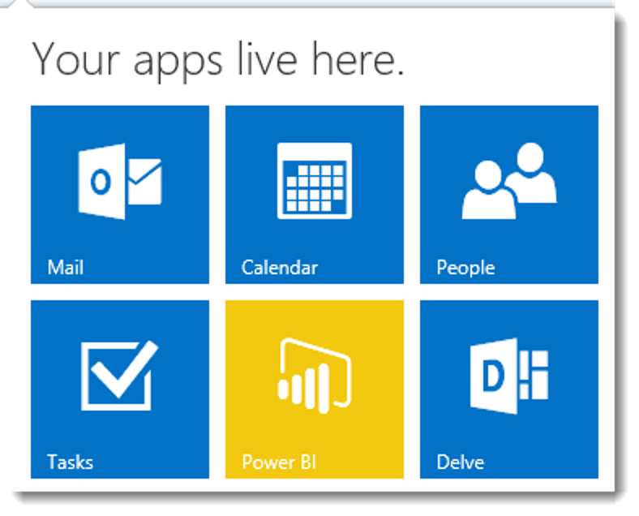
and types social in to the search field.
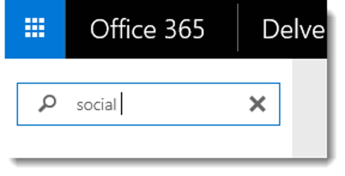
Karen finds white papers and PowerPoint presentations on social media trends and strategies that were authored by Kelly Krout.
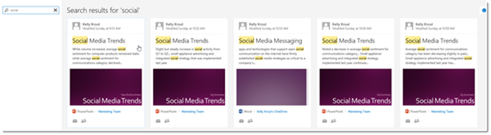
Office 365 services, like Delve and Yammer, help make sure Contoso’s good ideas, valuable experience, and expert knowledge don’t go to waste. By keeping information in the open, employees are able to easily share what they know with others.
Karen clicks on Kelly’s name to view her Delve profile and learn more about the work she's done. Karen can see that Kelly would be a great expert to include in the investigation of the M400 presales issue.
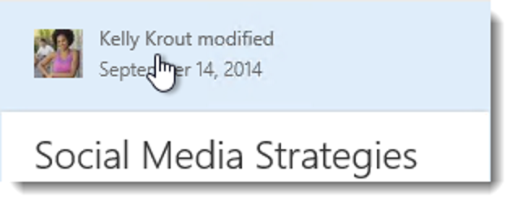
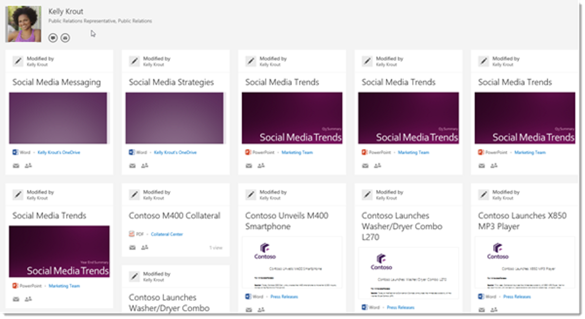
Karen reaches out to Kelly by clicking on the Message icon in Kelly's profile and asks her where she can learn about social media sentiment for Contoso products.
Karen types:
Hi Kelly! Where can I find information on social media sentiment for our products?
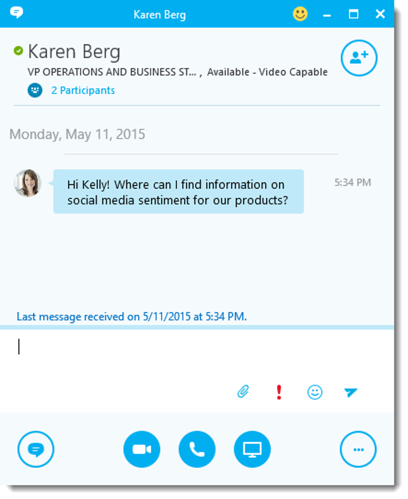
Kelly tells Karen that Contoso compiles tweet sentiment reports in the Power BI section of Contoso’s intranet under Sales & Marketing. Kelly offers to help Karen with her research and walk her through the reports.
Kelly also suggests they include a few members of Contoso's BI Strategy planning group as she thinks they will be able to add insight to other reports in the BI section.
Facilitation Tip: Drag in all participants in the room so everyone can participate. Instruct the participants to accept the call.
Karen sees on Skype for Business that VP of Corporate Marketing Alan Steiner, VP of Sales Operations Julian Isla and Director of Sales Analysis Molly Clark are online. She drags each of the participants into her meeting with Kelly and escalates the meeting to a video/audio call by clicking the camera icon so they can have a verbal conversation and see who is speaking.
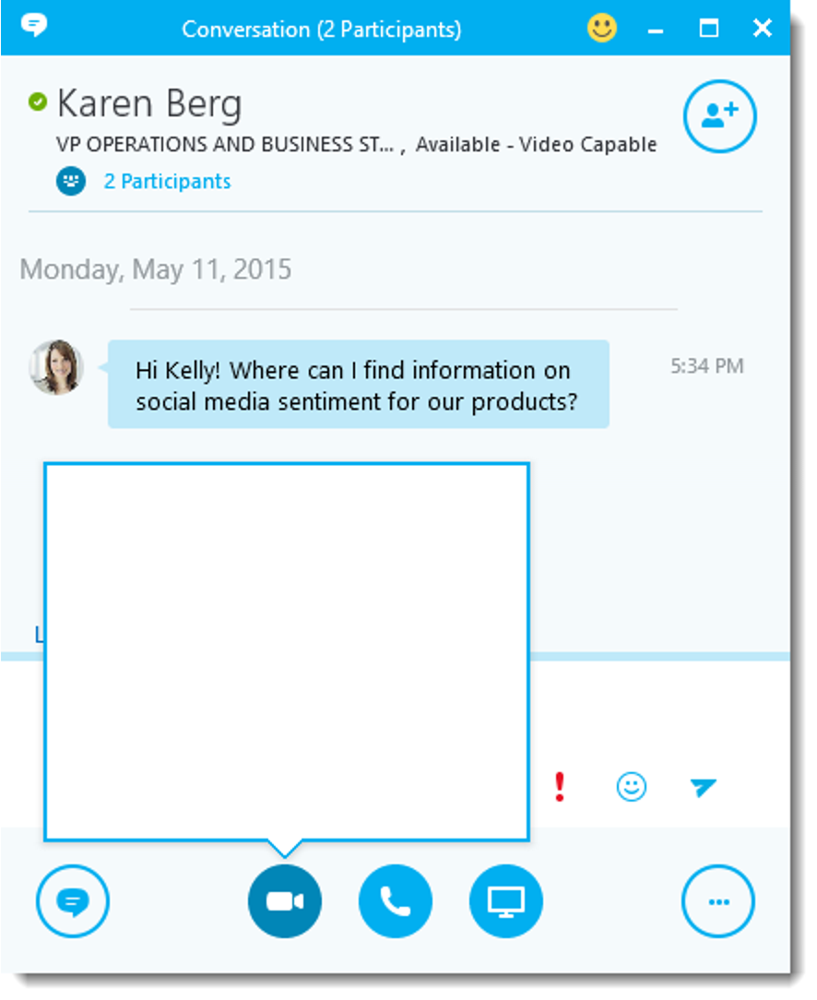
Customer Engagement: During the conversation, encourage participants to try out the drag-and-drop photo feature. Without needing to upload or attach them, simply drag and drop one or multiple images from the computer to an open IM window.
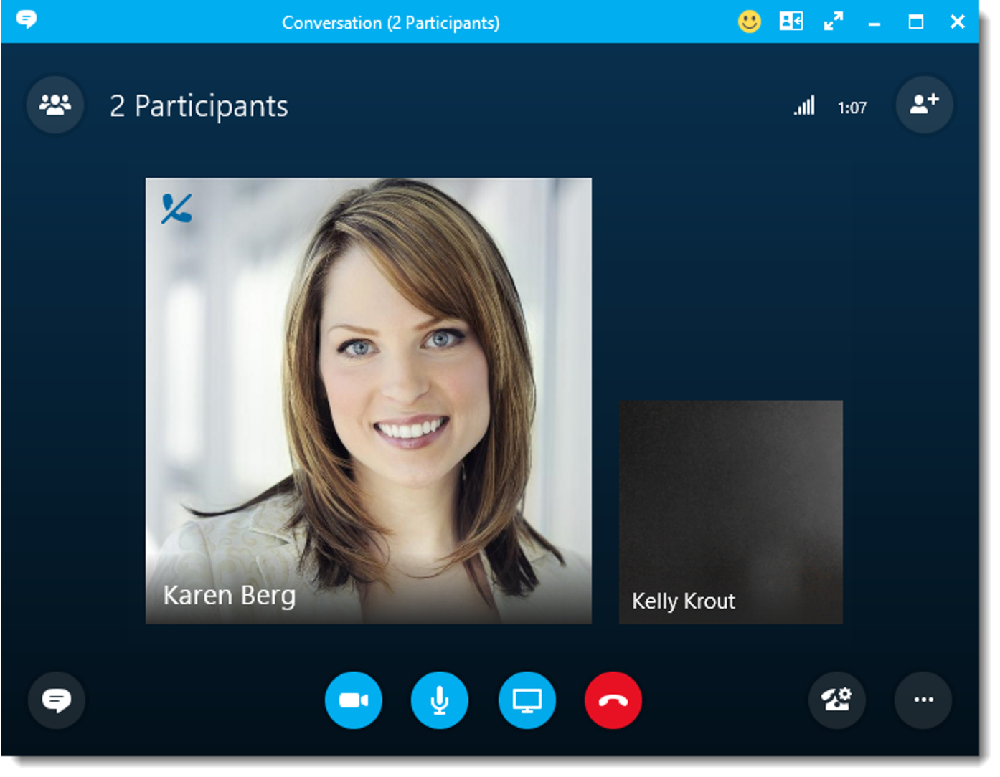
The video gallery simultaneously displays up to five different participants’ videos in HD and identifies the most active speakers by enlarging their videos. This helps the other participants focus on who is talking and associate names with faces. HD photos represent all additional meeting participants.
To better facilitate collaboration with her team, Karen clicks on Present > Desktop. The team members receive a sharing invitation notification that they can click to Accept meeting content.
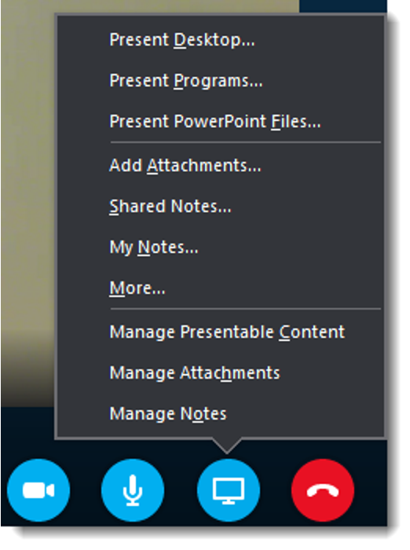
Skype for Business offers features to enable great meeting experiences and collaboration. It automatically captures participant lists via OneNote, and meeting organizers and participants can share and co-edit meeting notes directly from Skype for Business, so they don’t have to switch back and forth between applications.
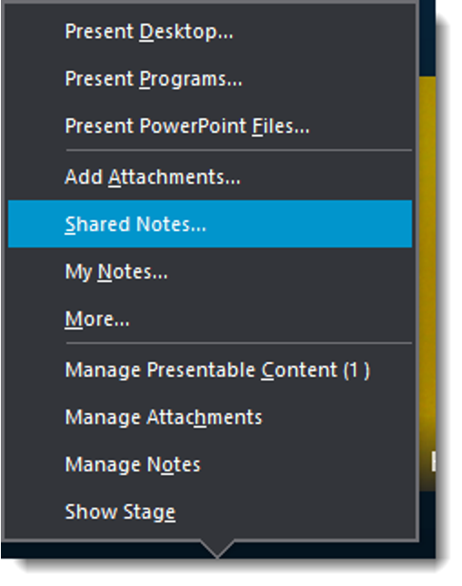
When Karen starts to present her desktop, Skype for Business will automatically set her status to Presenting, so that others are not able to IM her. This is a great way to keep unwanted interruptions from coming up during meetings.
By opening the Share window, Karen is able to preview what she is sharing by clicking Show Stage. This helps alleviate those "What do you see?" or "Can you see my desktop?" questions. When the preview stage is open, Karen can stop sharing or even select to share new content.
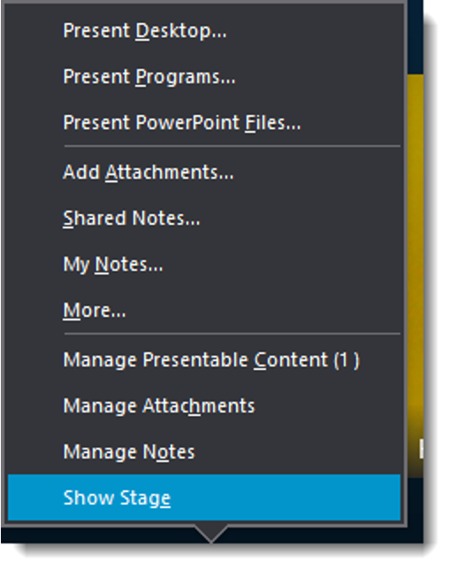
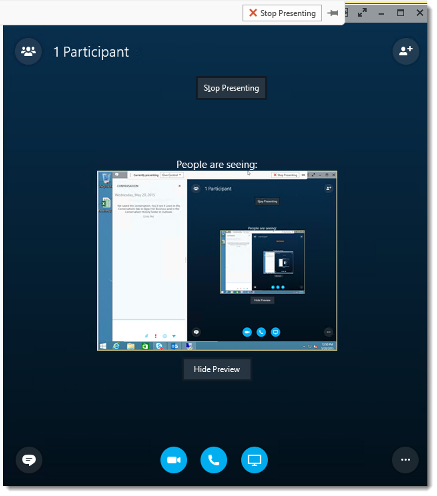
To close the preview window, Karen clicks Hide Preview.
With her colleagues ready to help and able to see what she's seeing, as well as guide her when needed, Karen fills the team in on what she’s learned thus far regarding the M400 and what she’d like to learn about the M400 and its presale performance.
Kelly recommends that they update the current marketing messages to address the public’s concerns and further emphasize the phone’s improved features.
Thanks to Office 365 features like Delve and Skype for Business, Karen was able to identify and connect with experts across her organization quickly whether they were in the office down the hall or on the other side of the globe. Karen can reach out to them instantly and get the answers and information she needs to make the right decisions, avoid reinventing the wheel and improve her work.